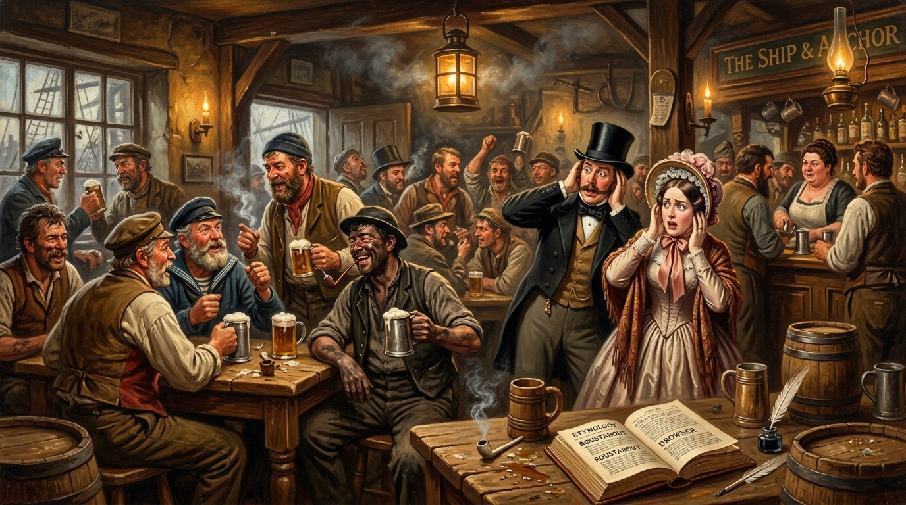

A History of Swearing and Filthy Talk.
An Examination of Linguistic Pragmatism, Working-Class Vernacular, Victorian Propriety, and the Indispensable Art of the Well-Timed Curse.

The Fundamental Linguistic Paradox
“Human beings have always possessed two remarkable linguistic abilities. The first is the capacity to discuss philosophy, mathematics, religion and the mysteries of existence. The second is the ability to hit our thumb with a hammer and instantly unleash a stream of words unsuitable for the ears of children, vicars or maiden aunts.”
Human beings have always possessed two remarkable linguistic abilities. The first is the capacity to discuss philosophy, mathematics, religion and the mysteries of existence. The second is the ability to hit our thumb with a hammer and instantly unleash a stream of words unsuitable for the ears of children vicars or maiden aunts. The history of swearing is therefore not a side note in human language. It is one of its most colourful chapters.
Contrary to popular belief, most swear words did not suddenly appear in the nineteenth century. Many are far older. Some can be traced back hundreds of years. What changed during the 1800s was not the existence of vulgar language but its spread. The Industrial Revolution gathered vast numbers of working people into towns, factories, docks and shipyards. Soldiers, sailors, miners, labourers and dockworkers developed colourful vocabularies as naturally as blacksmiths developed muscles.
Life was hard, dangerous and often unpleasant. Men hauling cargo through storms or marching through battlefields rarely paused to express themselves in delicate literary prose. When a cannon exploded, a ship ran aground or a cartwheel crushed a foot, nobody announced “I find this development mildly inconvenient.” Something much stronger usually emerged.
The Maritime & Military Engine of Language
The Royal Navy, merchant fleets, and imperial regiments functioned as itinerant academies of colorful dialect. Expressions forged amidst North Sea gales and coal-fired boiler rooms were carried from port to port, cross-pollinating vernaculars and transforming localized complaints into an international grammar of labor.
The Royal Navy, merchant fleets and armies of the British Empire became travelling schools of profanity. Sailors carried expressions from port to port. Soldiers carried them from colony to colony. Every army in history has developed a talent for inventive complaints, and nineteenth century soldiers were no exception. As British forces had travelled through parts of Africa, Asia, North America and the Pacific a considerable amount of colourful language had travelled with them.
Many swear words had humble origins. Some referred to bodily functions. Others referred to body parts. Still others referred to acts which respectable society preferred not to discuss in public. Victorian society in particular was famous for pretending such matters hardly existed. The result was predictable. The more respectable people tried to suppress certain words, the more attractive they became.
“Language possesses a funny streak. Tell human beings that a word is forbidden and they immediately become interested in saying it.”
The upper classes often publicly condemned vulgar speech while privately enjoying it. Aristocrats who would faint theatrically at coarse language over dinner frequently employed exactly the same expressions when a horse stepped on their foot. Thus the journey of swearing continued upward through society. What began in barracks, workshops and docks gradually found its way into drawing rooms, universities and eventually parliament itself.
This was not unique to Britain. Similar processes occurred across Europe and beyond. Human beings everywhere discovered that a carefully chosen insult could communicate anger frustration shock or amusement far more efficiently than several paragraphs of polite explanation.
The twentieth century accelerated the process dramatically. Two world wars mixed populations together on a scale never before seen. Soldiers from different regions exchanged expressions like trading cards. At the end of the Second World War, many formerly local expletives had become national property. Films, radio and later television spread them even further.
Trevor Swistchew’s preliminary disquisition on the history of profanity, working-class vernacular, and aristocratic hypocrisy. A forthcoming extended treatise exploring etymological genealogies and contemporary sociolinguistics is currently in preparation.
Sociolinguistic Dossier: The History, Etymology & Social Class of Swearing
The social stratification of profanity in the English language was solidified following the Norman Conquest of 1066. The ruling Franco-Norman nobility spoke Anglo-Norman French, while the conquered peasantry retained Old and Middle English (Germanic/Anglo-Saxon). Ordinary biological terms for bodily functions and anatomy (shit, piss, fuck, arse) were native Germanic vocabulary, whereas Latinate and French terms (defecate, urinate, copulate) were adopted by polite society as prestige markers.
The massive urban agglomerations of the 19th century concentrated heavy manual labor in shipyards, mines, and blast furnaces. Swearing served not merely as emotional release, but as an indispensable working-class solidarity code that excluded aristocratic oversight.
Naval and regimental service transported slang across the globe. By mixing regional accents from Glasgow, Newcastle, Dublin, and London on mess decks, military life standardized and exported colourful slang to all corners of the British Empire.